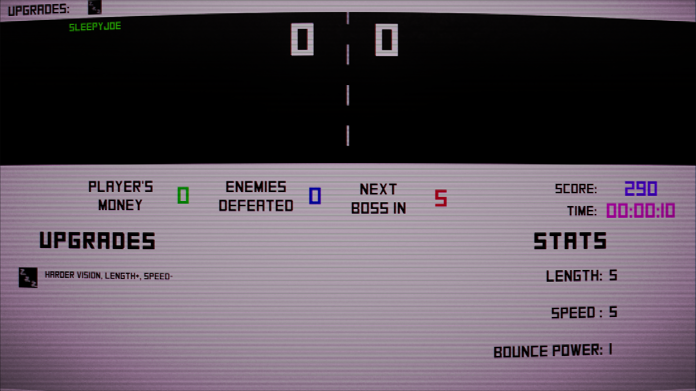
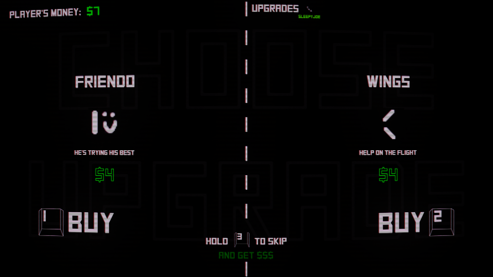
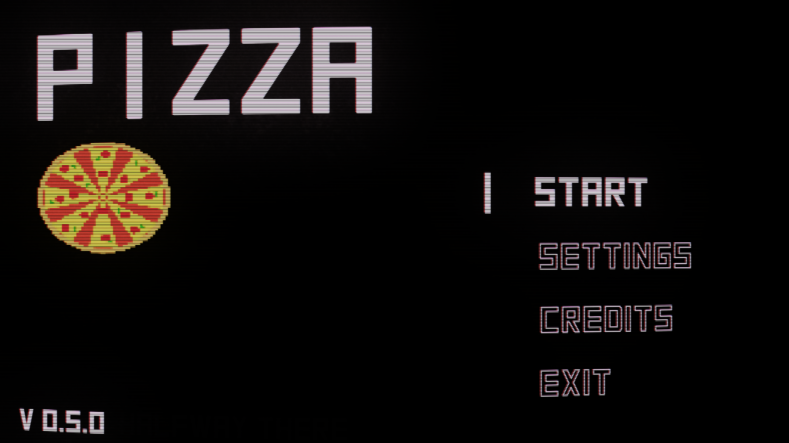

The last version of the game. One of the biggest (if not THE biggest) update I've made for the game. I added a score system that simply calculates different things a player does and rewards him with a growing number (DOPAMINE!!!).
This and other elements, like purchased upgrades, player's money, defeated enemies, stages until next boss, timer and paddle stats can be accessed by displaying a menu using TAB. I've also added a fun fire effect when the ball reaches a high velocity.
QOL: when the ball bounces for too many times without scoring a point it will reset its position to the starting position and will be lanuched again. This is to prevent sometimes happening endless bouncing, often caused by bouncing the ball in a certain angle making it perfectly horizontal. I also added three new upgrades: laser Ball, shadow and randoBall.
Also the enemy has a chance to randomly have one of few selected upgrades. I felt the enemies were very bland without having any upgrades, while the player can stack them, so I added that to raise the difficulty a bit. I have also added descriptions to the upgrades in the shop so the player might have some idea what they are purchasing.


I've just added more SFX to the main menu and adjusted the SFX and visibility in the disco ball upgrade. A new secret code has also been added to the main menu.

A brand new refreshed shop!
In this version I completely changed the rendering engine fron the build in rendering engine in Unity to URP. This change allowed me to add a whole lot of interesting and fun post processess not only to the game itself but to the upgrades, making it possible to make more of them and make them even more fun. This update has remade the visual design of the game to appear as a retro game with the CVT filter and whatnot. There is also a couple of new upgrades and items in the shop now have descriptions.
Five new upgrades and credits.